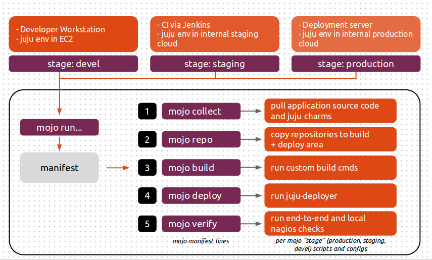
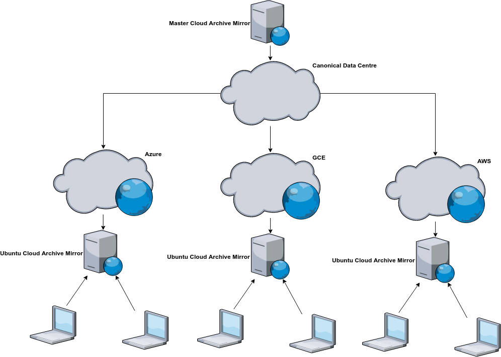

Managing Multi Cloud Services With Juju

Introduction
Managing a service with deployments in multi-cloud environments can be a challenge in terms of troubleshooting and scalability due to the complexity of dealing with different public cloud providers. An effective way to manage services deployed cross-cloud is to use tools that allow you to define your service once and deploy anywhere: in the cloud, on bare metal, or locally inside containers. In this blog post I am going to describe how the Canonical SRE team has achieved this, the tools that we use and the way we apply them to manage the Ubuntu Archive Mirror service.
Historical Archive Mirror Setup

It’s no secret that Ubuntu is a popular OS for running applications in the cloud. It was clear from the beginning that the increased adoption of Ubuntu in the cloud would cause a significant amount of stress on the master Ubuntu Archive Mirror service due to an increased rate of requests from Ubuntu instances running in public clouds. This was not a new problem for us, the Ubuntu Archive Mirror Network was originally conceived to protect the master Ubuntu Archives from getting over saturated with requests. The network architecture is a globally distributed system of web servers and caches that are operated by the community. The goal of this network is to improve response times for community users by directing traffic destined for the master Ubuntu Archive repositories to repositories geographically closer to the request’s origin. Without this distributed cache the millions of apt requests we receive every day would cause a denial of service to the master repository servers. Ubuntu updates would then be significantly degraded, which is unacceptable for any system running production grade services.
The nice thing about the Ubuntu Archive Mirror architecture is how extensible it is. Within each cloud region we have a deployment of the Ubuntu Archive Mirror service. Each regional deployment keeps in sync with the master repositories. When an Ubuntu instance is started in the cloud its apt sources are configured to point to the deployment servicing the region of which the instance is currently running. We apply this pattern to every public and private cloud we manage. This includes AWS, GCE, Azure and OpenStack. Identifying the Challenges
After understanding our architectural requirements, the next step was to figure out how to manage each individual Ubuntu Archive deployment. A non exhaustive list of challenges we needed to address were:
- How do we manage the lifecycle of each Ubuntu Archive Mirror service?
- Can we be sure that each environment is consistent and that the user experience remains the same no matter which Archive Mirror environment you are working on?
- How can we test proposed changes before upgrading production services?
- How do we respond to incidents when things go wrong with any of our environments and how do we ensure each environment is isolated from each other to avoid unnecessary outages?
Our engineers can’t get bogged down with the semantics of each cloud. The best approach is to have a uniform interface that applies to any platform. This saves engineering time by making our playbooks more succinct and easier to digest, there is less room for error when there are minimal commands to run, a consistent UX reduces mean time to recovery as an engineer can be confident that the same troubleshooting methodology can be applied no matter which environment they are in, finally, environment specifications stored in version control allow us to keep track of changes, and easily test and rollback revisions that do not work. The Solution
Our Ubuntu Archive mirror services are modeled with Mojo which orchestrates deployments with Juju. “Automate once, deploy anywhere” is an approach we have taken in developing our environment automation solution. We define what our environments look like once and have the tooling take care of the boring details. Juju
Juju is the component which drives each deployment. It is responsible for talking to the cloud APIs, installation and configuration of each application, provisioning cloud services, such as security, networking, storage, and user access control. Juju enables us to deploy and scale services quickly and efficiently to a variety of providers: public clouds, physical servers, OpenStack, and local containers. Juju is responsible for provisioning instances and installing the application (a charm in Juju context) onto them. It is also responsible for managing services, such as ensuring ACLs are configured, configuring advanced networking, and allocating storage. Deployment Control
Ubuntu Archive Mirror
All our Archive Mirror deployments are centrally managed. We have a deployment host from which all SREs connect to environments we manage. An internally developed tool allows SREs to search for the environment they need to connect to (such as “Azure Archive Mirror for Japan East region”), and then configures for them everything they need to connect to that environment in a consistent way.
The Ubuntu Archive Mirror service itself is modeled as a Mojo specification. Mojo is a system of configuration and tools for verifying the success of Juju environment deployments. It allows us to define what an Archive Mirror is in a revision-controlled configuration repository, and a means of validating whether what we deployed is as we intended.
To deploy a new environment we use Mojo to run a manifest file which tells it which operations (phases) to perform and in what order. The manifest file looks similar to this:
collect
deploy config=services
deploy config=relations
script config=post-deploy
sleep config=10
nagios-check skip-checks-extra="check_ksplice,check_total_procs"
juju-check-wait
verify config=verify-deploy
Mojo recognises different phases as different actions to perform. The three main phases to be concerned about are:
- collection
- Mojo will download the charms (service modules) required as per the file specified in the collect call.
- deployment
- The deploy phase is fairly self explanatory, it takes the artefacts from the collection phase and deploys them into the Juju model.
- verification
- A script can be called once the deploy phase is complete. The script is configured to run some verification commands to make sure the deployment is in the desired state.
We define a collect file that contains an inventory of each component, known as a charm. This file looks like the following:
ubuntu-repository-cache lp:ubuntu-repository-cache;overwrite=True
haproxy cs:haproxy
nrpe cs:nrpe
The actual service and relation specifications detail how each charm is related and any configuration options, i.e. Squid cache size and HAProxy monitor settings. For a look at the specification please see the appendix at the end of the post. Mojo uses codetree to pull down the charms, from either the charmstore or version control (e.g. launchpad.net or github.com), to the host and copies them to a charm repository for deployment. A phased approach protects us from incorrectly configured specifications as Mojo will not proceed if a phase fails. At the end of this process we have a new validated environment deployed and ready for use.
You can try this out for yourself, download the example mojo spec. * Before we begin you will need to have Juju, Mojo and a Juju controller bootstrapped. You can find a tutorial on how to set this up here. * Configure a Mojo project and workspace which we will use to build and test our archive mirror environment locally before it gets deployed into our cloud.
export MOJO_STAGE=production
export MOJO_WORKSPACE=archive-mirror
export MOJO_PROJECT=mojo-archive-mirror-proj
export MOJO_SERIES=xenial
export MOJO_SPEC=~/mojo/mojo-archive-mirror-spec/
export MOJO_LOCAL=~/mojo/LOCAL/mojo-archive-mirror-spec/
juju bootstrap
mkdir -p ${MOJO_SPEC}; mkdir -p ${MOJO_LOCAL};
(cd ~/mojo; curl https://admin.insights.ubuntu.com/wp-content/uploads/db69/mojo-archive-mirror-spec.tar.gz | tar xv)
mojo project-new -s $MOJO_SERIES -c lxd
mojo workspace-new --project $MOJO_PROJECT -s $MOJO_SERIES $MOJO_SPEC $MOJO_WORKSPACE
mojo run
Mojo has now orchestrated a deployment of our Archive Mirror environment. Below details the instances that were created and the applications installed onto them.
$ juju status
We know our new Archive Mirror is functioning because the verify phase in our manifest has curl’d the HAProxy unit and downloaded the list of supported Ubuntu series.
2018-07-16 06:53:34 [INFO] Running script verify-deploy
2018-07-16 06:53:35 [INFO] /ubuntu/
artful-backports/
artful-proposed/
artful-security/
artful-updates/
artful/
bionic-backports/
bionic-proposed/
bionic-security/
bionic-updates/
bionic/
[...]
2018-07-16 06:53:35 [INFO] Completed script verify-deploy in 0s (0.31s)
We keep track of each Archive Mirror deployment that we manage with stages embedded in the root of the Mojo spec directory. These stages are nothing more than sub-directories that Mojo looks out for. Under each stage is the information used by each Mojo phase.
The directory layout looks a little something like this:
mojo-archive-mirror-spec # repository root.
├── manifest # the manifest script, this is what mojo run is looking for.
└── production
├── collect # Contains the list of charms that the collect phase will download.
├── haproxy-services.yaml
├── relations # Specifies the contracts between each service.
└── services # Details how each service should be configured.
Mojo uses this approach when sourcing local significant configuration. This comes in handy when you want to do something like configure a service with dummy credentials for the CI deployment. If we wanted to add a new stage, like ci to the list of deployments we manage, we only need to create a new directory and populate the required files:
mojo-archive-mirror-spec
├── manifest
└── production
├── collect
[...]
└── ci
├── collect
Any changes made to the Archive Mirror specification are tested. Our testing environment is a mixture of technologies: Jenkins, Openstack, Mojo and Juju. The testing procedure is broken down as follows:
- Jenkins job pulls the latest Mojo specification from version control.
- A new juju model is created for the revision of the specification. The model is deployed into one of our private OpenStack clouds.
- The Jenkins script then executes a Mojo run which deploys the Archive Mirror service to the new Juju model.
- Jenkins monitors the progress and provides feedback on any errors.
This process gives us assurance that the changes we have made are deployable albeit only within an Openstack context. Closing Comments
So far our current solution has worked well. The time taken for an SRE to redeploy an Archive Mirror environment is under an hour. If an environment is sick and we start receiving alerts we can be confident that if all else fails, and troubleshooting is taking too long, we can destroy the environment and redeploy a fresh baseline. The process is as simple as failing over DNS, recreating the Juju model, running Mojo, and configuring DNS and monitoring.